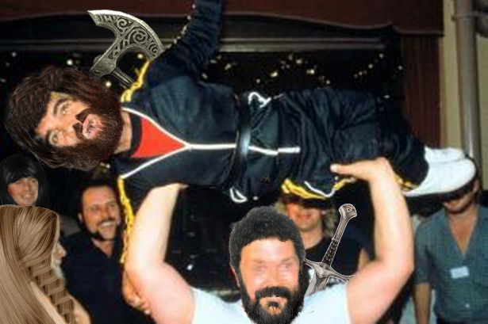

Introducción
Taverna Dungeons & Dragons (D&D) es un lugar para que los viajeros descansen, puedan compartir experiencias y reclutar a otros aventureros.
Reglas Básicas
Las reglas de la Taverna D&D son simples pero importantes, pero aquí te damos un resumen básico:
- No robar: Tenemos hadas vigilando desde los baños hasta el estacionamiento.
- No organizar linchamientos: Se prohibe la organizacion de eventos como guerras o golpes de estado.
- No lanzar enanos: Se prohibe a cualquier enano rebasando los 20 cm sobre el nivel del suelo.

Bodega
Aquí tienes algunos recursos útiles para seguir tu aventura: